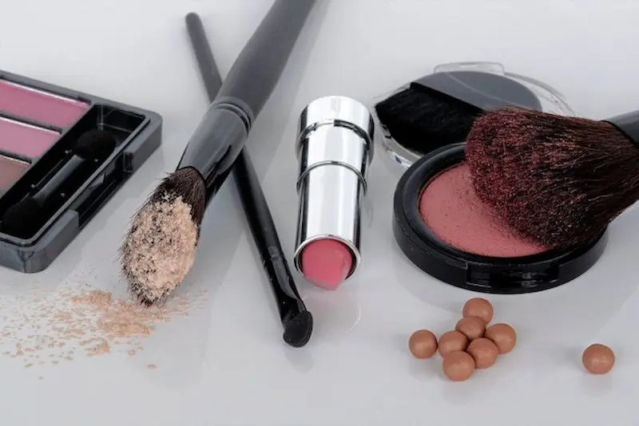
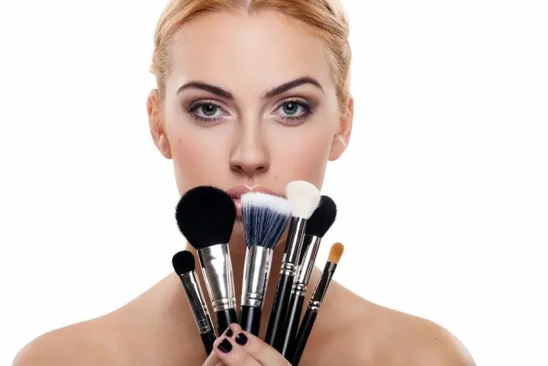

Ghidul paginii: machiaj de seară
Machiaj de seară pas cu pas
Look rezistent și expresiv pentru evenimente
Top produse pentru machiaj de seară
Texturi rezistente și finisaj impecabil
Produse premium pentru machiaj de seară
Efect de „ten perfect” și look sofisticat
Set buget pentru machiaj de seară (sub 300 RON)
Produse esențiale pentru un machiaj rezistent
Programează-te la un make-up artist
Programează-te pentru un machiaj de seară și obține un look expresiv, elegant și rezistent, care arată impecabil în orice lumină.
Ce este machiajul de seară
Machiajul de seară este o tehnică creată pentru a obține un look expresiv, rezistent și elegant, care evidențiază trăsăturile feței și arată spectaculos în lumină artificială, fotografii și la evenimente.
Acest tip de machiaj se caracterizează prin culori mai intense, blending atent și produse de lungă durată. Spre deosebire de machiajul de zi, machiajul de seară permite accente mai puternice pe ochi sau buze, creând un look vizibil, dar echilibrat.
Scopul principal este obținerea unui ten uniform, a unei priviri expresive și a unui echilibru corect între accente. În același timp, este important să eviți supraîncărcarea pentru ca machiajul să arate curat și sofisticat.
Machiajul de seară este ideal pentru evenimente, nunți, ședințe foto, cine și ocazii speciale — oferă feței mai multă expresivitate și un aspect fotogenic.
De ce machiajul de seară face look-ul mai expresiv și îngrijit
- evidențiază trăsăturile feței și oferă un look mai expresiv
- creează efectul unui machiaj profesionist și bine realizat
- uniformizează nuanța tenului și ascunde imperfecțiunile
- face fața mai fotogenică în lumină artificială și la evenimente
- rezistă mai bine și oferă un aspect elegant și “high-end”

Pregătirea tenului pentru machiajul de seară
Machiajul de seară începe întotdeauna cu o pregătire corectă a tenului. Chiar și cele mai rezistente fonduri de ten nu vor crea efectul de piele netedă, uniformă și îngrijită dacă pielea este deshidratată sau are textură neuniformă.
O rutină corectă ajută la obținerea unui finish impecabil, crește rezistența machiajului și oferă un rezultat profesional, fără efect de încărcare.
- Curățare — pentru un ten curat și pregătit
- Hidratare — cremă sau ser pentru elasticitate și finețe
- SPF (ziua) — protecție și menținerea unui ten uniform
- Bază de machiaj (primer) — netezește textura și crește rezistența
Înainte de aplicarea machiajului, așteptați 5–10 minute pentru ca produsele să fie complet absorbite. Astfel preveniți strângerea produselor și obțineți un machiaj de seară rezistent, care arată impecabil pe tot parcursul evenimentului.

Machiaj de seară pas cu pas


Machiajul de seară se bazează pe combinația dintre rezistență, intensitate și blenduire impecabilă. Scopul lui este să evidențieze trăsăturile feței, să creeze un look sofisticat și să reziste perfect pe tot parcursul serii — la evenimente, ședințe foto sau în lumină artificială.
Fond de ten rezistent
Alege un fond de ten cu acoperire medie sau mare și finish natural sau satinat. Acesta trebuie să uniformizeze tenul și să reziste fără efect de mască.
Corector
Corectează zona de sub ochi și imperfecțiunile. Machiajul de seară cere mai multă precizie, dar este important să păstrezi aspectul natural al pielii.
Contur și blush
Un contur discret adaugă profunzime feței, iar blush-ul oferă prospețime. Toate tranzițiile trebuie să fie bine estompate și naturale.
Machiajul ochilor
Accentul principal în machiajul de seară. Poți opta pentru smokey eyes, eyeliner sau farduri bine blenduite. Important este să creezi un look intens, dar echilibrat.
Iluminator
Aplică iluminator pe zonele înalte ale feței pentru un efect subtil. Seara este important să nu exagerezi, pentru a păstra aspectul elegant, nu lucios.
Buze
Alege între un nude echilibrat sau un ruj intens pentru un look statement. Cheia este armonia cu machiajul ochilor.
Machiajul de seară perfect este rezistent, bine definit și elegant — evidențiază trăsăturile și arată impecabil în orice lumină.
Top produse pentru machiaj de seară
Machiajul de seară necesită produse rezistente, pigmentate și expresive: fond de ten cu acoperire mare, farduri intense și buze accentuate.
Review independent. Produsele nu sunt sponsorizate.


Produse premium pentru machiaj de seară
Recenzie independentă. Produsele nu sunt sponsorizate.
Produsele premium pentru machiajul de seară se remarcă prin rezistență ridicată, pigmentație intensă și un finish impecabil. Creează un look expresiv și elegant, care rezistă perfect întreaga seară.


Greșeli frecvente în machiajul de seară
- fond de ten prea dens cu efect de „mască”
- accent exagerat simultan pe ochi și buze
- blenduire insuficientă a fardurilor și conturului
- fixare incorectă a machiajului
- prea mult luciu sau, dimpotrivă, un finish prea mat
Machiajul de seară necesită echilibru: trebuie să fie expresiv, dar nu încărcat. Greșelile în alegerea texturilor și în blenduire pot face ca look-ul să pară neîngrijit și mai puțin elegant.

Cum să faci machiajul de seară rezistent și impecabil
Machiajul de seară trebuie să reziste la lumină artificială, fotografii, emoții și ore întregi de purtare. Scopul principal este menținerea unui aspect perfect al pielii și a intensității machiajului, fără estompare sau migrare.
1. Baza corectă
Folosește un primer adaptat tipului de ten: matifiant pentru ten gras sau hidratant pentru ten uscat. Acesta prelungește rezistența machiajului și uniformizează textura pielii.
2. Fond de ten rezistent
Alege un fond de ten cu fixare bună și acoperire medie sau mare. Machiajul de seară necesită un ten perfect uniform, fără imperfecțiuni vizibile.
3. Fixarea produselor cremoase
Toate produsele cremoase (fond de ten, corector, contur) trebuie fixate cu pudră. Acest pas previne strângerea produselor și crește rezistența machiajului.
4. Farduri și eyeliner rezistente
Folosește bază pentru farduri și formule rezistente la transfer sau waterproof. Astfel, culoarea rămâne intensă și nu se strânge în pliul pleoapei.
5. Spray de fixare
Spray-ul de fixare unește toate straturile de machiaj, reduce efectul de pudrat și menține look-ul impecabil pe tot parcursul serii.
Machiajul de seară ideal nu înseamnă doar intensitate, ci și rezistență: tenul rămâne uniform, iar look-ul arată perfect chiar și după câteva ore.

Cui i se potrivește machiajul de seară
Machiajul de seară se potrivește aproape oricui, însă trebuie adaptat corect în funcție de tipul de ten și trăsăturile feței. Scopul este să evidențieze frumusețea naturală și să creeze un look armonios.
- Ten normal: suportă bine texturi intense și rezistente, atât mate, cât și luminoase.
- Ten uscat: necesită bază hidratantă și produse cremoase pentru a evita accentuarea uscăciunii.
- Ten mixt: echilibru între matifierea zonei T și iluminarea pomeților.
- Ten gras: se recomandă produse matifiante și fixare puternică pentru controlul luciului.
- Ten cu acnee sau textură: acoperire medie spre mare, aplicată ușor pentru a evita efectul de mască.
Machiajul de seară ideal este o adaptare personalizată: evidențiază trăsăturile, corectează imperfecțiunile și arată impecabil în orice tip de lumină.
Set de machiaj de seară (până la 300 RON)
💡 Cost total estimat: ~260–300 RON
Recenzie independentă. Produsele nu sunt sponsorizate.




Nu ești sigură cum să obții un machiaj de seară perfect?
Machiajul de seară necesită echilibru între intensitate, rezistență și eleganță. Un pas greșit poate transforma look-ul într-unul prea încărcat sau dezechilibrat.
Programează-te la un make-up artist profesionist și obține un machiaj de seară care îți evidențiază trăsăturile, rezistă ore întregi și arată impecabil atât în lumină artificială, cât și în fotografii.
Programează-te pentru machiaj de searăÎntrebări frecvente despre machiajul de seară
Care este diferența dintre machiajul de seară și cel de zi?
Machiajul de seară este mai intens și mai rezistent. Se folosesc texturi mai dense, culori mai pigmentate și accente (ochi sau buze). Este gândit pentru lumină artificială, fotografii și purtare îndelungată.
Cât rezistă machiajul de seară?
Dacă este realizat corect și cu produse rezistente, machiajul de seară poate dura între 6 și 12 ore sau chiar mai mult. Este important să folosești primer, pudră de fixare și spray fixator.
Cum faci machiajul de seară mai rezistent?
Folosește primer, fond de ten rezistent, combină texturi cremoase și pudrate și finalizează cu spray fixator. O fixare ușoară cu pudră în zona T ajută la controlul luciului și prelungește rezistența.
Ce alegi: accent pe ochi sau pe buze?
Regula clasică este un singur accent. Smoky eyes intens se combină mai bine cu buze nude, iar o ruj intens se potrivește cu un machiaj al ochilor mai discret. Astfel, look-ul rămâne echilibrat și elegant.
Este potrivit machiajul de seară pentru ședințe foto?
Da, este una dintre cele mai bune opțiuni. Machiajul de seară se vede foarte bine pe cameră, evidențiază trăsăturile și arată impecabil în lumină de studio sau seara.
Poți realiza machiajul de seară acasă?
Da, dar necesită practică și produse potrivite. Pentru evenimente importante (nuntă, ședință foto, ocazii speciale) este recomandat să apelezi la un make-up artist pentru un rezultat sigur și rezistență maximă.